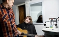
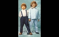
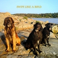
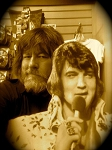

<!DOCTYPE html PUBLIC '-//W3C//DTD XHTML 1.0 Transitional//EN' 'http://www.w3.org/TR/xhtml1/DTD/xhtml1-transitional.dtd'>
<html xmlns='http://www.w3.org/1999/xhtml'>
<head>
<meta http-equiv='content-type' content='text/html;charset=utf-8'/>
<meta name='generator' content='MinSläkt 4.0'/>
<link rel='stylesheet' type='text/css' href='style.css'/>
<!--[if IE 6]>
<link rel='stylesheet' type='text/css' href='style_ie6.css'/>
<![endif]-->
<!--[if IE 7]>
<link rel='stylesheet' type='text/css' href='style_ie7.css'/>
<![endif]-->
<meta name='description' content='Personakt för Torbjörn (Ebbot) Lundberg, Född 1966-02-26 Västerås, Badelunda fs, Västerås kn'/>
<meta name='keywords' content='Lundberg,Torbjörn (Ebbot),Västerås, Badelunda fs, Västerås kn'/>
<meta name='author' content='Jan Fredman'/>
<title>Personakt för Torbjörn (Ebbot) Lundberg, Född 1966-02-26 Västerås, Badelunda fs, Västerås kn</title>
</head>

<body class='topic'>

<div class='tabs'>
<table>
<tr>
<td class='active'>Personakt</td>
<td class='inactive'><a class='inactive' href='ac492900c.html#root'>Antavla</a></td>
<td class='none'></td>
</tr>
</table>
</div>

<div class='contents'>
<div class='topic'>
<div class='record'>
<table>
<tr style='vertical-align:top'>
<td>
<h1>Torbjörn (<span class='u'>Ebbot</span>) Lundberg</h1>
<p>En svensk rocksångare, låtskrivare och musikproducent. </p>
              <table>
<tr><th>Far:</th><td><a href='pa33fe524.html'><span class='u'>Per-Ivan</span> Stig Lundberg (1935 - )</a></td></tr>
<tr><th>Mor:</th><td><a href='p673c9f8d.html'><span class='u'>Kerstin</span> Ingrid Andersson (1936 - )</a></td></tr>
</table>
<p/>
<table>
<tr valign='baseline'><th><span class='nowrap'>Född:</span></th><td>1966-02-26 Västerås, Badelunda fs, Västerås kn. <a href='#Source1' title='Mtl Göteborgs och Bohus län 1971'>[1]</a></td></tr>
<tr valign='baseline'><th><span class='nowrap'>Levde:</span></th><td>1971 Marholmsv pl 317, Askim, Askims fs, Askims kn. <a href='#Source1' title='Mtl Göteborgs och Bohus län 1971'>[1]</a></td></tr>
<tr valign='baseline'><th><span class='nowrap'>Levde:</span></th><td>1981 Bussgrund 5, Gjutebrunnsv 38, Askim, Askims fs, Göteborgs kn. <a href='#Source2' title='Mtl Göteborgs och Bohus län 1982'>[2]</a></td></tr>
<tr valign='baseline'><th><span class='nowrap'>Levde:</span></th><td>1991 Stigberget 34:16, Masthuggsliden 10, Göteborg, Oskar Fredriks fs, Göteborgs kn. <a href='#Source3' title='Mantalslängd 1991, Göteborgs och Bohus län'>[3]</a></td></tr>
</table>

<hr/>
<h2>Sambo med <a href='p886b08e9.html'>Eva <span class='u'>Susanna</span> (Sanna) Ulfsdotter Thorén (1957 - )</a></h2>
<p/>
<table>
<tr valign='baseline'><th><span class='nowrap'>Levde gifta:</span></th><td>2015 Släps fs, Kungsbacka kn. <a href='#Source4' title='https://www.ratsit.se/sok/avancerat/person'>[4]</a></td></tr>
</table>

<hr/>
<h2>Noteringar</h2>
<p>Torbjörn &quot;Ebbot&quot; Lundberg, född 26 februari 1966 i Västerås, är en svensk rocksångare, låtskrivare och musikproducent. Lundberg har varit sångare och frontfigur i den internationellt framgångsrika gruppen The Soundtrack of Our Lives.[1]<br/>Smeknamnet &quot;Ebbot&quot; kom till på en fest där alla talade baklänges.<br/><br/>Karriär<br/>Han började som sjuåring skriva Evert Taube-aktiga nidvisevalser vid sin elorgel, för att senare i livet sjunga och spela bas i svensk-norska punkbandet &quot;Sure Tråkings Trio&quot; (1981¿1983) tillsammans med Patrik Caganis och Sondre Kvevik.[2][3] Han var senare medlem och ledstjärna i rockbandet Union Carbide Productions tillsammans med bland andra Henrik Rylander, Björn Olsson och Patrik Caganis mellan 1986 och 1993. Mellan 1994 och 2012 var han sångare och frontman i Soundtrack of Our Lives. Numera är han aktuell som soloartist samt också med bandet The New Alchemy tillsammans med Per Svensson, Henrik Venant, Mats Gustafsson och Clay Ketter vars nya album släpps i sommar.<br/><br/>13 juni 2012 släpptes Ebbot Lundbergs soloalbum There's only one of us here. Albumet består av ett enda, 43 minuter långt, ljudspår indelat i sju sekvenser med normalton 432 Hz[4] och var ursprungligen skapat 2011 för konstprojektet (In)Visible Dialogues av konstnären Per Hüttner och professor Elias Arnér.[5][6][7] Sedan kom på samma bolag &quot;The Homo Erectus EP&quot; som innehåller tre nyskrivna låtar.<br/><br/>3 augusti 2012 debuterade han som sommarpratare i Sommar i P1. Ebbot Lundberg medverkade i 2013 års upplaga av TV4:s Så mycket bättre.<br/><br/>Hösten 2014 gjorde Lundberg berättarrösten till Sveriges Radios julkalender High Tower. Julen 2014 debuterade han som skådespelare i Peter Birros miniserie Viva Hate.<br/><br/>Samarbeten och produktionsarbete<br/>Lundberg har arbetat som musikproducent åt artister såsom The Loons, Nymphet Noodlers, Nicolai Dunger, Onkel Kånkel, The Oholics, Cry, The Preacher &amp; The Bear, Chreschendolls och Zoobox. Han har också samarbetat och sjungit i produktioner med Jane Birkin, Dj Fontana, The Cadillac band, Billy Burnette, Tommy Blom, Little Gerhard, Audio Laboratory, Turbonegro, Martin McFaul, Nina Persson &amp; The Cardigans, Swingfly, Caesars, Meja, Bröderna Lindgren, Augustifamiljen, Teddybears Sthlm, side effects, Trummor &amp; Orgel och Olle Ljungström.<br/>Källa: <a href='https://sv.wikipedia.org/wiki/Ebbot_Lundberg' target='_new'>sv.wikipedia.org/wiki/Ebbot_Lundberg</a><br/><br/>Referenser<br/>1 ^ Ebbot Lundberg. Sommar i P1 med Ebbot Lundberg (2012-08-03). SR.se. Sveriges Radio. Lyssna på programmet (längd ca 90 minuter). URL hämtad 18 augusti 2012. Storlek 46 MiB.<br/>2 ^ ”Sure Tråkings trio ( Göteborg -1983 )”. swedishpunk.com. Arkiverad från originalet den 13 augusti 2014. Läst 13 augusti 2014.<br/>3 ^ ”Ebbot Lundberg ¿ Från punk till storbandsjazz” (pdf). Norrbottenmusikens offentliga program 2013. Norrbottens läns landsting. sid. 7. Arkiverad från originalet den 13 augusti 2014. Läst 13 augusti 2014.<br/>4 ^ <a href='http://www.realitysandwich.com/sonic_shamanism' target='_new'>www.realitysandwich.com/sonic_shamanism</a><br/>5 ^ ”DN”. Läst 7 juni 2012.<br/>6 ^ ”Ebbot Lundberg: ”There¿s only one of us here””. Dagens Nyheter. Läst 26 juni 2012.<br/>7 ^ (In)visible Dialogues, Ed. E. Arnér and P. Huttner, Published by Dent-de-Leone. ISBN 978-       91-978934-3-5<br/><br/>Externa länkar<br/>Ebbot Lundberg på Svensk Filmdatabas<br/><a href='http://www.sfi.se/sv/svensk-filmdatabas/Item/?type=PERSON&itemid=315998' target='_new'>www.sfi.se/sv/svensk-filmdatabas/Item/?type=PERSON&itemid=315998</a><br/><br/>Ebbot Lundberg på Svensk mediedatabas<br/><a href='http://smdb.kb.se/catalog/search?q=ebbot+lundberg' target='_new'>smdb.kb.se/catalog/search?q=ebbot+lundberg</a><br/><br/>Ebbot Lundberg - officiell webbplats<br/><a href='http://www.ebbotlundberg.se/' target='_new'>www.ebbotlundberg.se/</a><br/><br/>Ebbot Lundberg ¿ Artist, låtskrivare Sommar i P1 2012-08-03<br/><a href='http://sverigesradio.se/sida/avsnitt/116678?programid=2071' target='_new'>sverigesradio.se/sida/avsnitt/116678?programid=2071</a><br/><br/>________________________________________________<br/><br/>Expressen 2013-11-16<br/><a href='http://www.expressen.se/noje/roos-moter-ebbot-bland-det-roligaste/' target='_new'>www.expressen.se/noje/roos-moter-ebbot-bland-det-roligaste/</a><br/>Här intervjuas Ebbot Lundberg.<br/><br/>Roos möter Ebbot: &quot;Bland det roligaste&quot;<br/>Ebbot Lundbergs psykedeliska universum. Vad är myt och vad är sanning? Slog han verkligen Bono i pingis? Och hur VAR det att spela med Rolling Stones?<br/><br/>- Jag blev inte starstruck. Jag bara noterade att de var jävligt små med stora huvuden och såg ut som reptiler, säger den &quot;Så mycket bättre&quot;-aktuella stjärnan. In under kaftanen!<br/>- Är jag sen? HUR sen? Förlåt, säger Ebbot Lundberg och slänger sig i soffan.<br/><br/>Han är inte sen, inte en minut. Men han är van vid att alltid vara sen.<br/>- Det har ju hänt att några flighter har åkt utan mig. Det var samma med tåget i dag, precis att jag hann.<br/>- Men jag gillar känslan av panik. Jag är likadan i skapandeprocessen, det händer att jag sätter en låt på väg in i studion, säger den 47-åriga sångaren.<br/><br/>Just i dag har han åkt från Göteborg till Stockholm för att mastra den digitala nyutgåvan av Union Carbide Productions plattor, hans numera kultförklarade band från åttiotalet.<br/><br/>- Det blir en jävla skillnad, säger han. Nu låter det som det kändes att det lät när vi spelade in.<br/><br/>Man tänkte när ni lade ner Soundtracks of our lives att du skulle göra mest solo, men har fortsatt med olika band. Är du mer flockdjur än ensamvarg?<br/>- Nej, jag är en ensamvarg egentligen men jag gillar att interagera med andra människor. Jag har alltid varit väldigt lojal mot mina band, jag var den sista i Soundtrack som började göra saker vid sidan av.<br/><br/>När ni skulle ta farväl sa du &quot;ni kommer inte att se mig i något lekprogram på tv i alla fall&quot;.<br/>- Och det stämmer. &quot;Så mycket bättre&quot; är inget lekprogram. Okej, det ligger någon jävla lek mitt i, men det handlar om att skapa musik.<br/>- Det är, handen på hjärtat, bland det roligaste jag har gjort. Vi skulle ha behövt en vecka efteråt och bara umgåtts. Kemin var väldigt stark och det VAR omtumlande.<br/><br/>Ken Rings program förra lördagen blev en väldig urladdning. Hur var det att befinna sig mitt i känslostormen?<br/>- Jag hade träffat Ken hemma hos Klas Åhlund (Teddybears STHLM) en gång innan, men allt han har råkat ut för, herrejävlar, så stora saker, saker som människor inte vet om.<br/><br/>Det var väl inte allt som togs upp heller. Ken Ring har ett brottsregister som en telefonkatalog.<br/>Och det slutade inte när du fyllde 16, som man har förstått det.<br/>- Nej, jag har alltid dragits till udda personer och udda personer har dragits till mig. Man skulle vara en badboy, det var en attityd.<br/><br/>Stämmer det att du spelade pingis med Bono och slog honom med 21-5 när ni var förband åt U2 på Ullevi 2005?<br/>- Haha, har jag sagt det? Nej, jag vet inte. Som jag minns det nu åkte jag till Strömstad efter spelningen och köpte en hund.<br/>- Vi spelade i och för sig med dem i Köpenhamn också, det kan ha varit då. Ibland vet man inte om saker har hänt. Jag tror att vi får be gitarristen Edge reda ut detta.<br/><br/>Att spela med Rolling Stones inför 13 000 i Globen var som sagt inte nån jättesak för Ebbot Lundberg.<br/>- Det kändes som återuppväckta spöken från Mayakulturen. Den stora grejen med Mick Jagger var att inse &quot;fan vilken dålig kondis jag har&quot;. Jag skämdes lite för att jag var så välmående och sket i allt. Sen tänkte jag &quot;det är inget för mig, jag har mitt eget uttryck&quot;. Men jag kan beundra både Jagger och Iggy Pop för att de kan hålla sig i så bra form.<br/>- Iggy delade jag loge med en gång, han ser ut som något man har köpt på Buttericks.<br/>- I Rolling Stones var det bara Charlie Watts som jag hälsade ordentligt på, säger den karismatiske sångaren och konstaterar att han inte är den som slickar upways.<br/>- Jag förstår inte den grejen. Den enda gången jag har varit riktigt starstruck var när jag träffade Lill Lindfors, kanske Linda Haglund också, 1976. Jag har väldigt svårt att gå fram och be om autografer. Som på Fotbollsgalan nu, alla mina kompisar ville att jag skulle fixa Zlatans autograf till deras söner, men det hade varit jävligt konstigt.<br/><br/>Fick Zlatan din då?<br/>- Haha, kanske, det hade varit något. Han är världens bästa fotbollsspelare, men hysterin runt honom är otrolig.<br/><br/>Men Jane Birkin, jag är besatt av Jane Birkin. Du måste berätta hur det var när ni sjöng duett tillsammans.<br/>- Jane Birkin såklart! Med en vacker kvinna är det annorlunda, de kan jag bli visuellt kär i. Hon var väldigt sexig och öm, så som man önskade att hon skulle vara. Lite blyg också och jag kan vara rätt bufflig i studion, jag fick skärpa mig för att lugna ner mig.<br/><br/>Hur kunde Serge Gainsbourg välja Birgitte Bardot?<br/>- Ja, hur? Jane Birkin var bättre, jag hade valt henne. De var radarpar ju. Men de hann få en söt dotter i alla fall.<br/><br/>Du själv är gift och hyllande din fru Susanna på ett otroligt fint sätt när du sommarpratade.<br/>- Ja, Sanna är min idol, en mentor. Hon gillar inte det så kallade rampljuset och hade inte en aning om vem jag var när vi träffades. Det var nog bra. Det känns som att hon är nerskickad från någonstans för att ta hand om det här hopplösa fallet, haha.<br/><br/>Du behöver inte prata om detta om du inte vill, men ni har inga barn.<br/>- Nej, det har vi inte, vi har aldrig velat ha barn, vi är inte intresserade. Och det tycker folk är jättekonstigt &quot;Va, det är ju meningen med livet&quot;. Men det tycker inte vi. Det handlar om att ta hand om liv och det kan man göra på andra sätt. Vi vill ha mycket djur. Vi har fyra hundar och vem vet, det kanske blir getter och grisar och tjofadderullan också.<br/><br/>Att du ska göra julshow med Peter Wahlbeck, hur kommer det sig?<br/>- För att jag dras till det oberäkneliga. Det är som med tåget och panikkänslan, jag vill ha ett kaos som ska redas upp.<br/><br/>Hur ska showen se ut?<br/>- Jag vet inte, det är det som är grejen. Vi har bara setts en gång.<br/><br/>Och då hade ni druckit sprit, lade armarna om varandra och sa &quot;Klart vi ska göra en show ihop&quot;.<br/>- Nej, så var det inte. Han ringde mig och sa &quot;du är den ende som är psykedelisk, vill du göra en julshow med mig&quot;.<br/>- Jag gillar allt som är surrealistiskt, har alltid gjort, du skulle se mina teckningar som barn. Det ser ut som jag har gått på något, värre än Dali och Magritte. Jag tänker att tillvaron är som en lök man skalar, det är olika lager och för mig har det alltid legat en spänning i att komma under nästa lager.<br/><br/>Tror du på gud?<br/>- Det är en definition, jag tror att allt har ett medvetande.<br/><br/>Tror du på David Bowie?<br/>- Jag trodde, att han skulle göra en jävligt bra skiva. Men det var ju bara första låten på nya som var bra. Jag blev besviken.<br/>- Men det var ingen som vågade såga honom, det är så med stjärnor som har hållit sig borta länge.<br/><br/>Hur många kaftaner har du?<br/>- 50, mest svarta. Det funkar inte med ljusa, det blir för mycket Jesus, för lattjo och det måste se bra ut. Jag eller min fru designar dem och syr upp.<br/><br/>Har du varit naken under?<br/>- Det har hänt, men jag måste ha något som håller upp &quot;paketet&quot;, konstaterar Ebbot Lundberg och fnissar (jo, fnissar).<br/><br/>Jag frågar om det är Melodifestivalen nästa nu när han ändå har gett sig in i tv-leken.<br/>- Nejnej, jag är inte intresserad av Melodifestivalen. Jag kommer inte vara med själv, däremot kan jag tänka mig att skriva låtar.<br/><br/>Eller bara plocka en från byrålådan.<br/>Ebbot berättar att har en hel påse med outgivet godis hemma.<br/>- Det är över 50 låtar i alla fall, som sträcker sig ända bak till åttiotalet. Det är planen nu, att försöka se till att de kommer ut.<br/>- Det känns kul.<br/><br/>Av Malin Roos<br/>malin.roos@expressen.se<br/><br/>_________________________________________________<br/><br/>2013-12-01 Ebbot Lundberg: ”Jag spelade av mig alla konflikter”<br/><a href='http://www.dn.se/kultur-noje/musik/ebbot-lundberg-jag-spelade-av-mig-alla-konflikter/' target='_new'>www.dn.se/kultur-noje/musik/ebbot-lundberg-jag-spelade-av-mig-alla-konflikter/</a><br/><br/>Han dök naken i publikhavet och gaffatejpade sina mest privata delar offentligt. I ett kvarts sekel var ƯEbbot Lundberg frontfigur i kultförklarade Union ƯCarbide ƯProductions och The Soundtrack of Our ƯLives. Hans hejdlösa röjande på scen gav honom rykte som värsting till och med i rockbranschen, men i hemlighet önskar han att livet vore en musikal.<br/><br/>Torbjörn Ebbot Lundbergs mäkƯtiga röst och scenpondus har byggt hans berömmelse. Som Julie ƯAndrews på filmaffischen till musikalklassikern ”Sound of Music” kommer han mot oss med gitarrfodralet svängande i vänsterhanden. Till ljudet av en inre musik, hans livs signaturmelodi. På väg från hemmet i Särö till en gratisspelning på ett ostajlat kafé i Majorna i Göteborg.<br/><br/>Omgivningarna är lantliga. Den sluttande tomten avgränsas av en mossbelupen stenmur. I övre hörnet finns en grind mot skogen, i nedre en inhägnad med spräckliga Brahmahöns. Mitt på tronar ett stilrent renoverat 1700-talstorp med punschveranda och spröjsade fönster (frun Sanna Thorén Lundberg har jobbat på Ikea, varit chef för innerstadsparens inredningsmecka Norrgavel och driver numera eget företag med inriktning på organisk design).<br/><br/>¿?Ni kan nog få kika in nu när hon inte är hemma, erbjuder Ebbot efter viss toffeltvekan.<br/><br/>Hans 187 centimeter och 120 kilo fyller den harmoniskt färgsatta och minimalistiskt inredda bostaden. Den helskäggige, kaftanklädde rocksångaren framför oss har knappt gått att ha i möblerade hotellrum. Vem hade trott att han sedan tio år tillbaka bor så här, och före det, under Stockholmsåren, i en bostadsrätt i Vasastans välartade kvarter?<br/><br/>För några timmar sedan, när vi stretade efter hans vilt flaxande regnponcho på havsklipporna i stormvindarna, påminde han om en shaman. När han lekte dragkamp med sina hundar Astrid och Moses på den tång- och manettäckta stranden förvandlades han till en leonbergerkorsad bastard, en byracka med samma galna blick i guldögonen som de.<br/><br/>Och under lunchen på kött, sås och potatis på Säröhus, ett hotell med kungabilder från öns glansdagar på väggarna (både Oscar II och Gustav V brukade besöka kronohemmanet Särö på västkusten, med dess sommarnöjen och badortsƯkultur) visar sig ytterligare sidor av hans komplexa personlighet.<br/><br/>¿?Stökig och svårhanterlig utifrån sett, samtidigt blyg och inåtvänd, men ogenerat kärleksfull hela tiden oavsett om det är hopplöst, som han själv beskriver den.<br/><br/>Torbjörn Ebbot Lundberg kom till världen som lillbrorsa. Han var yngst av tre bröder, nyfiken och envis. En sådan unge som man måste sätta staket runt och ändå inte vet var man har därför att han har smitit på knän och händer in till grannarna för att titta på deras gökur.<br/><br/>Sedan blev han storebror, något han inte riktigt verkar ha kommit över än. Tre år gammal rymde han från familjen, som dittills varit hans men skaffat en bebis. Han återfanns i utkanterna av Borås, sökande efter nya föräldrar samt stadens djurpark.<br/><br/>Där och då fick han en insikt. Hans mor och far älskade honom, även om de tyvärr kände likadant för hans babybror. Och under sitt sommarprat förra året erkände han att det inte finns något han hatar så mycket som att allt hans ”självgoda och disträa” lillebror gör är rätt, och att allt han själv gör är fel.<br/><br/>I dag nöjer han sig med att berätta att hans yngre bror ”blev advokat som farsan, säljer pensionsförsäkringar i USA, spelar golf och glider omkring”. Samt med att inte lämna ut hans telefonnummer till DN Söndag för en kommentar om sin egen karaktär.<br/><br/>¿?Vi är ganska olika, förklarar han oviljan att bli offentligt analyserad av lillbrorsan.<br/><br/>Varpå han först tystnar, sedan tillägger:<br/><br/>¿?Vi är ganska lika också.<br/><br/>Ebbot Lundberg och hans äldre bröder tillbringade sina första år i Västerås. Familjen flyttade runt en del för att, när Ebbot var fyra år gammal, slå sig ned i Askim, en välmående villastadsdel i Göteborg med putsade fasader mot Kattegatts solglittrande vågor.<br/><br/>¿?I Askim var det många nyrika som inte umgicks med de som bodde i lägenhet, men hos oss fick alla vara. Det var en frizon där alla hängde och gjorde det de normalt inte fick göra hemma, och det är jag väldigt tacksam över, säger han.<br/><br/>Pappa Lundberg företrädde Ackordscentralen och hans namn stod att läsa i nyheterna i samband med uppmärksammade konkurser och företagskonsolideringar. Han jobbade mycket och var sällan hemma, vilket kompenserades av att hans fru arbetade deltid på en barn- och ungdomspsykiatrisk mottagning för att ha tid över till de fyra sönerna. Hon gick på utflykt med dem när de var små och lät dem härja bäst de ville när de blev äldre.<br/><br/>¿?Vi var väl något slags högre medelklass, det var ju villa helt klart, men mer som Villa Villekulla. Även om det var väldigt fint var det ganska öppen terräng. Vi hade ett gigantiskt kuddrum och flipperspel och kunde väsnas och spela hög musik, säger Ebbot.<br/><br/>En lång period var de fem hemmaboende bröder eftersom en pojke som modern kommit i kontakt med genom jobbet inlemmades i familjen som fosterson. Alla fem var födda på 60-talet. Ebbots öron fylldes av ständigt brödrabråk och högtalardunk, och från sjuårsåldern skärmade han av genom att skapa sin egen ljudbild.<br/><br/>¿?Jag spelade improvisationer på vår tramporgel, helt inne i mig själv. Jag spelade av mig konflikterna, slagsmålen och oberäkneligheten, som jag tyckte var jobbig.<br/><br/>En dag var det sångtävling på musiktimmen i skolan. Ebbot minns fortfarande ilskan. Han visste att han sjöng bättre än alla andra, visste det men vågade inte visa det, och blev utröstad. Föräldrarna ordnade med pianolektioner. Ebbot försökte slippa undan det teoretiska tragglandet genom att spela in läraren på kassettband och lära sig styckena på gehör, men tröttnade ändå.<br/><br/>¿?Jag var inte intresserad av noter. Jag var intresserad av att skapa. Jag fattade aldrig den där grejen; varför jag måste läsa noter när jag hade musiken i huvudet, säger han.<br/><br/>Så började han tio år gammal på en elorgelkurs. Några av deltagarna skulle medverka på en elorgelfestival anordnad av Yamaha och kursledarna ville ha med Ebbot.<br/><br/>¿?Det gick virtuoser, yngre killar än mig som nästan kunde spela Rachmaninov, på den där kursen. Min teknik var rätt kass men jag var den ende som hade skrivit egna låtar och ledarna tyckte att de var bra, säger han.<br/><br/>För första gången stod han offentligt på en scen och framförde tre egenkomponerade stycken. Det gav mersmak. Några år senare bildade han bandet Slam, och därefter Sure Tråkings trio, tillsammans med fosterbrorsan och en kompis. Enligt Torbjörn Ebbot Lundberg bjöd trion åhörarna på fegispunk. De var allt för välanpassade för att vara punkarga på riktigt, och allt för måna om att se snygga ut för att klä sig i säkerhetsnålar. Efter en kort tid upplöstes trion.<br/><br/>Under en skidresa till Chamonix, där alla i bussen söp och pratade baklänges, blev Tobbe Ebbot, ett namn som han bar med sig in i nästa band, Union Carbide Productions. De klev fram i rampljuset 1987 iförda yuppiemundering bestående av skjorta och kostym, och gjorde sitt bästa för att uppfattas som älskvärda svin.<br/><br/>¿?Jag ville återspegla samtiden i en retfull image. Vi spelade ett gäng spolierade slynglar som inte brydde sig om någonting. Det var så fel ihop med vår musik och det gillade jag. Det var inte alls insmickrande, ingen tyckte om oss, säger Ebbot.<br/><br/>Bandet fick aldrig något stort kommersiellt genombrott men deras råa rock och kaotiska konserter gav dem fans som Nirvanasångaren Kurt Cobain och New York-bandet Sonic Youth. Göteborgssonen Håkan Hellström är fortfarande en stor tillbedjare. När han hedrades med en egen allsångstimme på Skansen i somras mötte han svenska folket iförd en Union Carbide Productions-tröja.<br/><br/>Det var i slutet av den sjuåriga perioden med Union carbide productions som Ebbot mötte sin fru Sanna på en reklamfest. Han var just då inne i en mental svacka. Han ville sluta i bandet och han var sliten. Liksom resten av gänget hade han partajat vid varje tillfälle som gavs de senaste åren.<br/><br/>¿?Dygnet runt. På allt vi kom åt. Jag vet inte varför vi lever i dag, säger han.<br/><br/>Union Carbide Productions konserter dominerades av Ebbots storslagna röst, höggradiga scennärvaro, bristande impulskontroll och, några låtar in i spellistan, helnakna kroppshydda. Bland fansen blev han känd för att ha rockvärldens största organ. Under en spelning lindade han gaffatejp runt hela härligheten. Men varför klädde han egentligen av sig?<br/><br/>¿?Det var show. Hade de kommit dit skulle de få något oförglömligt. Jag gjorde vad som helst. Jag kunde leka Blåkullehäxa och fara med kvast ut i publiken och i Berlin satte jag mig naken över ansiktet på den däckade basisten och lade av en brakare, säger han.<br/><br/>Ebbots rockstjärnestatus och idolleverne imponerade inte på Sanna. Hon hade varken hört talas om Union Carbide Productions eller Ebbot.<br/><br/>¿?”Vet du inte vem Ebbot är? Han är ju för fan kult!” skrek killen som presenterade oss på den där festen. Hon fattade ingenting. Hon tyckte att jag var en stajlad tönt. Men jag var ganska lik hennes tidigt bortgångne pappa. Annars hade jag inte haft en chans. Jag är inte precis förstahandsvalet av en trygg person att vara tillsammans med även om jag numera har blivit dresserad, eller tämjd, lite grann, säger han.<br/><br/>När Ebbot tittar på videoband från Union Carbide Productions-tiden ser han en person som har så mycket energi och frustration att han inte vet var han ska göra av den. Han säger att han levde som en seriefigur: hyperaktiv. Folk blev rädda och tog avstånd. Social belastning och kärlekslöshet kan han inte skylla på, så han förutsätter att läggningen är medfödd:<br/><br/>¿?Såklart, jag har som alla andra den där bokstavskombinationen som gör en ofokuserad och får en att ta in för mycket. Det enda jag såg fram emot i skolan var fredagens roliga timme. Resten av tiden spann jag i väg på olika saker. Det pågick fantastiska grejer i huvudet: idéer, associationer.<br/><br/>Eftersom han fortfarande fungerar likadant framstår han regelbundet som spånig, konstaterar han. Han hinner inte med sina tankespiraler fonetiskt; han funderar så intensivt på något att han säger vad som helst och blir osammanhängande. Folk undrar vad han svamlar om och den sociala kommunikationen kärvar.<br/><br/>¿?Jag har mycket lättare att uttrycka mig genom musik; då hittar jag rätt ord. Egentligen önskar jag att hela livet vore en musikal och att alla gick omkring och sjöng till varandra, så att allt blev klart och tydligt.<br/><br/>Att Sanna Thorén kom in i hans liv var nog en nödvändighet, någon som räddade det mesta, tror Ebbot. Hon är åtta år äldre än han och både fru och mentor. Förutom kärlek har hon gett honom den struktur som han aldrig fick med sig hemifrån.<br/><br/>¿?Bitvis har det varit jobbigt att komma ut i vanliga livet, utanför hemmet, och inse att alla inte är lika frisläppta som man själv. Sanna är väldigt uppstyrd och det har varit väldigt givande.<br/><br/>Deras förhållande är inne på sitt tredje decennium. De har valt att leva utan barn.<br/><br/>¿?Såklart, jag har som alla andra den där bokstavskombinationen som gör en ofokuserad och får en att ta in för mycket. Det enda jag såg fram emot i skolan var fredagens roliga timme. Resten av tiden spann jag i väg på olika saker. Det pågick fantastiska grejer i huvudet: idéer, associationer.<br/><br/>Eftersom han fortfarande fungerar likadant framstår han regelbundet som spånig, konstaterar han. Han hinner inte med sina tankespiraler fonetiskt; han funderar så intensivt på något att han säger vad som helst och blir osammanhängande. Folk undrar vad han svamlar om och den sociala kommunikationen kärvar.<br/><br/>¿?Jag har mycket lättare att uttrycka mig genom musik; då hittar jag rätt ord. Egentligen önskar jag att hela livet vore en musikal och att alla gick omkring och sjöng till varandra, så att allt blev klart och tydligt.<br/><br/>Att Sanna Thorén kom in i hans liv var nog en nödvändighet, någon som räddade det mesta, tror Ebbot. Hon är åtta år äldre än han och både fru och mentor. Förutom kärlek har hon gett honom den struktur som han aldrig fick med sig hemifrån.<br/><br/>¿?Bitvis har det varit jobbigt att komma ut i vanliga livet, utanför hemmet, och inse att alla inte är lika frisläppta som man själv. Sanna är väldigt uppstyrd och det har varit väldigt givande.<br/><br/>Deras förhållande är inne på sitt tredje decennium. De har valt att leva utan barn.<br/><br/>¿?Det roliga är att vi var så lika varandra på riktigt. Han var lite smartare bara, han var mer fokuserad.<br/><br/>Alfons och Ebbot poserar skuldra mot skuldra på ett skivomslag: framtassarna på var sin sida om magen, utsvängd page, rättfram blick i de tättsittande ögonen och tungan utanför munnen. Det är en gruppbild, Astrid och Moses är också med. Nu är det bara de kvar.<br/>¿?Men på lördag ska jag titta på en ny hundvalp, tröstar sig Ebbot.<br/><br/>Vi fortsätter bilfärden mot Majorna och berättelsen om hans liv. Union Carbide Productions gav ut sin sista skiva 1992. Tre år senare var det dags igen. Ebbot och ett par till ur det gamla bandet samt tre nya musiker bildade The Soundtrack of Our Lives, TSOOL.<br/><br/>De fick en Grammis som årets nykomlingar 1996, och 2001 en till, som årets artist. Även om de aldrig blev en hitmaskin, eller lika stora som The Hives och The Cardigans, är The Soundtrack of Our Lives ett av få svenska band som verkligen har kommit ut i världen, och det enda svenska rockband som har blivit grammynominerat i USA (2003). De reste jorden runt, drog tillräckligt stor publik i varenda större stad för att kunna turnera år efter år efter år.<br/><br/>Legendariska skivbolaget Motown gav ut dem. David Letterman bjöd in dem till sin sena tv-show, och deras låtar spelades i succéserierna ”Californication” och ”Six Feet Under”. The Soundtrack of our lives höll inte ihop lika länge som Ebbot och Sanna har gjort, men väl i 18 år. Den 22 december 2012 gjorde de sin sista spelning, på Södra teatern i Stockholm.<br/><br/>Ebbot känner ingen tomhet, tvärtom stor lättnad.<br/><br/>¿?Ingen offence mot någon, men det känns väldigt oproblematiskt att vara soloartist. Jag är nästan chockerad över hur enkelt det är. Man behöver inte kompromissa, inte gå igenom olika instanser, inte koordinera allas privatliv. Det behöver inte ske några jobbiga missförstånd, säger han.<br/><br/>Grupparbete försvåras av att musiken för honom är på liv och död.<br/><br/>¿?Musiken är viktigare är något annat. Mycket viktigare än mitt eget liv. Det har hänt att jag har kompromissat och inte följt min idé fullt ut. Det är som att hugga av en arm.<br/><br/>Som soloartist samarbetar han i de tillfälliga konstellationer han vill. I kväll är musikerna Gunnar Frick och Martin McFaul de utvalda. De ska hedra nyligen bortgångne sångaren och låtskrivaren Lou Reed.<br/><br/>¿?Det är en gratisspelning. Kaféägaren ska gå omkring med en hink och samla in gaget.<br/><br/>Ebbot öppnar gitarrfodralet, kränger på sig Ưinstrumentet och börjar spela i en enda svepande rörelse och i samma ögonblick som han kliver in i lokalen. Karin Forsman, den ena av tvillingsystrarna som driver stället, skyndar fram i servitrisförkläde och uppriktig beundran:<br/><br/>¿?What an honour! hälsar hon.<br/><br/>När gästerna börjar droppa in försvinner musikerna till logen: genom restaurangköket, nedför en smal baktrappa och in i ett utkylt källarskrymsle med en inträngd duschkabin i ena hörnet och en naken glödlampa i taket. Ebbot sätter sig ned. Kroppshyddan sväljer stolen under honom. Han ställer ifrån sig glaset med boxvin som han haffade på vägen genom köket bredvid Eldoradotvålen på handfatskanten, och brister ut i sång. Rösten expanderar utrymmet vi befinner oss i.<br/><br/>Gunnar Frick lutar sig fram:<br/><br/>¿?Här har du en spricka, visar han på gitarren.<br/><br/>¿?Det är inte bra, svarar Ebbot obekymrat.<br/><br/>Tidigare, när vi frågade honom vilket märke det är på gitarren, var han tvungen att läsa på fodralet Ưinnan han svarade. Statusprylar och märken intresserar honom lika lite som tekniska gadgets. Sitt livs första Iphone, som han köpte för ett år sedan, packade han upp och satte på laddning först i går. Sedan tog han ändå tjocktelefonen med den klassiska Nokiatrudelutten i morse.<br/><br/>¿?Jag har jättesvårt att ta till mig det digitala. Det känns som att jag blir fångad i nätet ¿ spindelnätet, säger han.<br/><br/>Och fortsätter att sjunga på kvällens låtar. Förut försökte han smita undan. Nu tar han alla jobb han erbjuds och hinner med oavsett kreddfaktor. Han medverkar i TV?4:s nya säsong av ”Så mycket bättre”, spelar in soloplattor och en film, producerar andras musik, och planerar en julshow i Malmö tillsammans med komikern Peter Wahlbäck. Kanske börjar han måla också. Om ett tag, när han har varvat ned lite till.<br/><br/>¿?Jag har mycket roligare nu än jag hade när jag var en tjugoårig dare devil. Även om det ju också var väldigt kul på sitt sätt, säger han med ett ännu inte helt domesticerat varggrin.<br/><br/>Av Anna Bodin<br/>anna.bodin@dn.se<br/>_________________________________________________<br/><br/>2013-12-01 DN Kultur<br/><br/>Ebbot: Mitt liv i årtal<br/>Ebbot minns saker från så tidig ålder att folk inte tror honom, som att han smet in till grannarna för att titta på deras gökur när han var ett och ett halvt år. Här är några nedslag i hans liv med hans egna ord:<br/><br/>1966<br/>”Råkar sugas in i jordens atmosfär klockan 2:42 den 26 februari detta år för att uppleva ännu en planetär odyssé. Vi bor i Västerås men flyttar till Kalhäll utanför Stockholm och till Borås Ưdärefter.”<br/><br/>1972<br/>”Lyssnar på Tio i Topp med Kaj Kindvall och älskar låtintron. Lär mig spela in programmet med rullbandspelare. Flyger för första gången och reflekterar för första gången över hur små alla människor, hus och bilar är, sedda uppifrån luften. Spelar fotboll i Göteborgs fotbollsförening (GFF). Börjar lekskolan och lär mig Povel Ramels ¿Den lille tecknaren¿ utantill. Får en kick av responsen och inser att jag vill bli artist.”<br/><br/>1982<br/>”Spelar bas med punkbandet Slam, som har sitt första och enda liveframträdande och därƯefter löses upp på grund av att jag bor i ett för fint hus. Ironiska fegispunkbandet Sure Tråkings Trio bildas därefter tillsammans med framtida Union Carbide Productions-gitarristen Patrik Caganis och min fosterbror Sondre Kvevik. Sure Tråkings Trios ¿Shaskig vellenpåse¿ släpps på kassett i 25 exemplar.”<br/><br/>1986<br/>”Träffar Björn Olsson (gitarr) och Henrik Rylander (trummor). Tillsammans med Patrik Caganis (gitarr) och Per Helm (bas) bildas Union Carbide Productions. Vi har vår första livespelning på Rädda regnskogenfestivalen på Sprängkullen. Spelningen leder till att vi blir bannlysta i Göteborg. Åker in i lumpen som befäl i pansarƯskyttedivisionen i Uddevalla. Börjar spela in vår debutskiva ¿In the air tonight¿, som släpps den 11 september året därpå.”<br/><br/>1996¿2002<br/>”The Soundtrack of Our..</p>

<hr/>
<h2>Personhistoria</h2>
<table>
<tr><th>Årtal</th><th>Ålder</th><th>Händelse</th></tr>
<tr>
<td>1966</td>
<td align='right'></td>
<td>Födelse 1966-02-26 Västerås, Badelunda fs, Västerås kn <a href='#Source1' title='Mtl Göteborgs och Bohus län 1971'>[1]</a></td>
</tr>
<tr>
<td>1969</td>
<td align='right'></td>
<td>Brodern <a href='pe68e6335.html'>Leif Lundberg</a> föds 1969 Borås, Gustav Adolf fs, Borås kn <a href='#Source1' title='Mtl Göteborgs och Bohus län 1971'>[1]</a></td>
</tr>
<tr>
<td>1971</td>
<td align='right'></td>
<td>Levde 1971 Marholmsv pl 317, Askim, Askims fs, Askims kn <a href='#Source1' title='Mtl Göteborgs och Bohus län 1971'>[1]</a></td>
</tr>
<tr>
<td>1981</td>
<td align='right'></td>
<td>Levde 1981 Bussgrund 5, Gjutebrunnsv 38, Askim, Askims fs, Göteborgs kn <a href='#Source2' title='Mtl Göteborgs och Bohus län 1982'>[2]</a></td>
</tr>
<tr>
<td>1991</td>
<td align='right'></td>
<td>Levde 1991 Stigberget 34:16, Masthuggsliden 10, Göteborg, Oskar Fredriks fs, Göteborgs kn <a href='#Source3' title='Mantalslängd 1991, Göteborgs och Bohus län'>[3]</a></td>
</tr>
<tr>
<td>2015</td>
<td align='right'></td>
<td>Levde gifta <a href='p886b08e9.html'>Eva <span class='u'>Susanna</span> (Sanna) Ulfsdotter Thorén</a> 2015 Släps fs, Kungsbacka kn <a href='#Source4' title='https://www.ratsit.se/sok/avancerat/person'>[4]</a></td>
</tr>
</table>

<hr/>
<h2>Dokument</h2>
<table>
<tr><td><a href='ebbot_lundberg.txt' target='_new'>Koppling till författarsläkten i norr</a></td></tr>
<tr><td><a href='tre röster om ebbot lundberg.pdf' target='_new'>Tre röster om Ebbot Lundberg</a></td></tr>
<tr><td><a href='jag är ebbot lundberg.pdf' target='_new'>Jag är Ebbot Lundberg</a></td></tr>
</table>

<hr/>
<h2>Källor</h2>
<table>
<tr><td id='Source1'>[1]</td><td>Mtl Göteborgs och Bohus län 1971</td></tr>
<tr><td></td><td><i></i></td></tr>
                <tr><td>&nbsp;</td><td>&nbsp;</td></tr>
<tr><td id='Source2'>[2]</td><td>Mtl Göteborgs och Bohus län 1982</td></tr>
<tr><td></td><td><i></i></td></tr>
                <tr><td>&nbsp;</td><td>&nbsp;</td></tr>
<tr><td id='Source3'>[3]</td><td>Mantalslängd 1991, Göteborgs och Bohus län</td></tr>
<tr><td></td><td><i></i></td></tr>
                <tr><td>&nbsp;</td><td>&nbsp;</td></tr>
<tr><td id='Source4'>[4]</td><td>https://www.ratsit.se/sok/avancerat/person</td></tr>
<tr><td></td><td><i></i></td></tr>
</table>
</td>


<td>
<table>
<tr><td width='120'><a href='pc492900c0o.jpg'></a></td></tr>
<tr><td>2012-08-03. Sommarstudion SR P1<br/>Foto: William Hedegärd<br/><br/>Lyssna till sändningen (50:18 min.):<br/><a href='http://sverigesradio.se/sida/avsnitt/116678?programid=2071' target='_new'>sverigesradio.se/sida/avsnitt/116678?programid=2071</a><br/><br/>Om Ebbot Lundberg<br/>Kaftanklädd frontman för popbandet The Soundtrack of our lives (TSOOL) som nu är ute på sin avskedsturné. 1996 släpptes deras debutplatta, och de kom att bli ett av Sveriges flitigaste turnéband. TSOOL har agerat husband på Polarprisgalan, spelat med bland andra Rolling Stones och Oasis och blivit nominerade till en amerikansk Grammy. Ebbot valde mellan att bli musiker och vetenskapsman. Har just släppt soloplatta och är invald i Rockabilly hall of fame. Smeknamnet ”Ebbot” kom till på en fest där alla talade baklänges.<br/>&nbsp;</td></tr>
<tr><td>&nbsp;</td></tr>
<tr><td width='120'><a href='pc492900c1o.jpg'></a></td></tr>
<tr><td>2012-08-03. Sommarstudion SR P1<br/><br/>Ebbot Lundberg i Sommarstudion.<br/>Foto: William Hedegärd<br/><br/>Artist, låtskrivare - Synkronicitet, tidsuppfattning och koincidenser i livet kommer det att handla om till större delen. Jag vet att jag drivit många till vansinne, men jag är ändå rätt effektiv när jag väl är på plats... Och nu kände jag att näsan växte till en snabel. Ebbot Lundberg säger att han nästan kan bli lite upphetsad i panikkänslan över att komma för sent. Vilket enligt honom själv kraftigt begränsat hans yrkesval i livet.<br/>&nbsp;</td></tr>
<tr><td>&nbsp;</td></tr>
<tr><td width='120'><a href='pc492900c2o.jpg'></a></td></tr>
<tr><td>2012-08-03. Sommarstudion SR P1<br/><br/>Sena ändringar i manus.<br/><br/>Foto: William Hedegärd<br/>&nbsp;</td></tr>
<tr><td>&nbsp;</td></tr>
<tr><td width='120'><a href='pc492900c3o.jpg'></a></td></tr>
<tr><td>2012-08-03. Sommarstudion SR P1<br/><br/>Fruktpaus på kajen!<br/><br/>Foto: William Hedegärd<br/>&nbsp;</td></tr>
<tr><td>&nbsp;</td></tr>
<tr><td width='120'><a href='pc492900c4o.jpg'></a></td></tr>
<tr><td>2012-08-03. Sommarstudion SR P1<br/><br/>Ebbot Lundberg pratar synkronicitet.<br/><br/>Foto: William Hedegärd<br/>&nbsp;</td></tr>
<tr><td>&nbsp;</td></tr>
<tr><td width='120'><a href='pc492900c5o.jpg'></a></td></tr>
<tr><td>2012-08-03. Sommarstudion SR P1<br/><br/>Ebbot Lundberg utanför Kanalhuset i Göteborg.<br/><br/>Foto: WIlliam Hedegärd<br/>&nbsp;</td></tr>
<tr><td>&nbsp;</td></tr>
<tr><td width='120'><a href='pc492900c6o.jpg'></a></td></tr>
<tr><td>2013-02-20. Ebbot Lundberg på Grammisgalan på Cirkus, Stockholm den 20 februari 2013,<br/><br/>Foto: Frankie Fouganthin - Eget arbete<br/>&nbsp;</td></tr>
<tr><td>&nbsp;</td></tr>
<tr><td width='120'><a href='pc492900c7o.jpg'></a></td></tr>
<tr><td>2013-08-14. Ebbot Lundberg under Stockholms Kulturfestival 2013.<br/><br/>Foto: Frankie Fouganthin - Eget arbete<br/>&nbsp;</td></tr>
<tr><td>&nbsp;</td></tr>
<tr><td width='120'><a href='pc492900c8o.jpg'></a></td></tr>
<tr><td>2013-12-01. När Ebbot gick upp i vikt bytte han scenkostymen mot mammaklänning. Hans fru Sanna designade då hans första kaftan. Det är fortfarande hon som ritar hans kläder. Men hon Ưklipper inte hans hår.<br/><br/>Foto: Foto: Eva Tedesjö<br/><br/><a href='http://www.dn.se/kultur-noje/musik/ebbot-lundberg-jag-spelade-av-mig-alla-konflikter/' target='_new'>www.dn.se/kultur-noje/musik/ebbot-lundberg-jag-spelade-av-mig-alla-konflikter/</a><br/>&nbsp;</td></tr>
<tr><td>&nbsp;</td></tr>
<tr><td width='120'><a href='pc492900c9o.jpg'></a></td></tr>
<tr><td>2013-12-01. Ebbot Lundberg älskar sina hundar, här Moses och Astrid. ƯEfter att den här bilden togs köpte han två till, åtta veckor gamla leonbergervalparna Dante och Buddha. Allihop sover nedanför hans säng.<br/><br/>Foto: Eva Tedesjö<br/><br/><a href='http://www.dn.se/kultur-noje/musik/ebbot-lundberg-jag-spelade-av-mig-alla-konflikter/' target='_new'>www.dn.se/kultur-noje/musik/ebbot-lundberg-jag-spelade-av-mig-alla-konflikter/</a><br/>&nbsp;</td></tr>
<tr><td>&nbsp;</td></tr>
<tr><td width='120'><a href='pc492900c10o.jpg'></a></td></tr>
<tr><td>2013-12-01. Martin McFauls och Ebbots röster limmar ihop i stämsången. De har känt varandra ända sedan gymnasiet, då Martin anade genialiteten bakom Ebbots hemsnickrade suparvisor. I dag är ƯEbbot lika imponerad av Martins första skiva ”Pop mansion”.<br/><br/>Foto: Eva Tedesjö<br/><br/><a href='http://www.dn.se/kultur-noje/musik/ebbot-lundberg-jag-spelade-av-mig-alla-konflikter/' target='_new'>www.dn.se/kultur-noje/musik/ebbot-lundberg-jag-spelade-av-mig-alla-konflikter/</a><br/>&nbsp;</td></tr>
<tr><td>&nbsp;</td></tr>
<tr><td width='120'><a href='pc492900c11o.jpg'></a></td></tr>
<tr><td>2013-12-01. 2013. I TV4:s ”Så mycket bättre” med Agnes Carlsson och Lill Lindfors.<br/><br/>Foto: TV4<br/><br/><a href='http://www.dn.se/kultur-noje/musik/ebbot-lundberg-jag-spelade-av-mig-alla-konflikter/' target='_new'>www.dn.se/kultur-noje/musik/ebbot-lundberg-jag-spelade-av-mig-alla-konflikter/</a><br/>&nbsp;</td></tr>
<tr><td>&nbsp;</td></tr>
<tr><td width='120'><a href='pc492900c12o.jpg'></a></td></tr>
<tr><td>2005. 2005. The Soundtrack of Our Lives kommer med sin femte skiva, ”A present from the past”.<br/><br/>Foto: Fredrik Sanberg/TT<br/><br/><a href='http://www.dn.se/kultur-noje/musik/ebbot-lundberg-jag-spelade-av-mig-alla-konflikter/' target='_new'>www.dn.se/kultur-noje/musik/ebbot-lundberg-jag-spelade-av-mig-alla-konflikter/</a><br/>&nbsp;</td></tr>
<tr><td>&nbsp;</td></tr>
<tr><td width='120'><a href='pc492900c13o.jpg'></a></td></tr>
<tr><td>2003. 2003. Återförening med Union Carbide Productions på Hultsfredsfestivalen.<br/><br/>Foto: Jessica Gow<br/><br/><a href='http://www.dn.se/kultur-noje/musik/ebbot-lundberg-jag-spelade-av-mig-alla-konflikter/' target='_new'>www.dn.se/kultur-noje/musik/ebbot-lundberg-jag-spelade-av-mig-alla-konflikter/</a><br/>&nbsp;</td></tr>
<tr><td>&nbsp;</td></tr>
<tr><td width='120'><a href='pc492900c14o.jpg'></a></td></tr>
<tr><td>2013-12-01. 2013. Världens största mikrofon, som Ebbot Lundberg är delägare i tillsammans med konstnären David Öberg, ska skeppas till Kina för att säljas på auktion. Mikrofonen är 4,5 meter lång och väger 800 kg.<br/><br/>Foto: Björn Lindgren/TT<br/><br/><a href='http://www.dn.se/kultur-noje/musik/ebbot-lundberg-jag-spelade-av-mig-alla-konflikter/' target='_new'>www.dn.se/kultur-noje/musik/ebbot-lundberg-jag-spelade-av-mig-alla-konflikter/</a><br/>&nbsp;</td></tr>
<tr><td>&nbsp;</td></tr>
<tr><td width='120'><a href='pc492900c15o.jpg'></a></td></tr>
<tr><td>2013-12-01. 1969. Ebbot Lundberg, 3 år, (till Ưvänster) är fotomodell i Borås textiliers katalog.<br/><br/>Foto: Borås textilie<br/><br/><a href='http://www.dn.se/kultur-noje/musik/ebbot-lundberg-jag-spelade-av-mig-alla-konflikter/' target='_new'>www.dn.se/kultur-noje/musik/ebbot-lundberg-jag-spelade-av-mig-alla-konflikter/</a><br/>&nbsp;</td></tr>
<tr><td>&nbsp;</td></tr>
<tr><td width='120'><a href='pc492900c16o.jpg'></a></td></tr>
<tr><td>2015-09-02. Ebbot Lundberg and the Indigo children<br/><br/>Foto: Hans Selander<br/><br/><a href='https://www.facebook.com/ebbotlundberg/photos/a.340023689373518.77123.100124630030093/954621197913761/?type=1&theater' target='_new'>www.facebook.com/ebbotlundberg/photos/a.340023689373518.77123.100124630030093/954621197913761/?type=1&theater</a><br/>&nbsp;</td></tr>
<tr><td>&nbsp;</td></tr>
<tr><td width='120'><a href='pc492900c17o.jpg'></a></td></tr>
<tr><td>2015-05-05. Foto: Björn Larsson Rosvall/TT<br/><br/><a href='https://www.facebook.com/ebbotlundberg/photos/a.340023689373518.77123.100124630030093/920371818005366/?type=1&theater' target='_new'>www.facebook.com/ebbotlundberg/photos/a.340023689373518.77123.100124630030093/920371818005366/?type=1&theater</a><br/>&nbsp;</td></tr>
<tr><td>&nbsp;</td></tr>
<tr><td width='120'><a href='pc492900c18o.jpg'></a></td></tr>
<tr><td>2015-05-09. Världens bästa Roger.<br/><br/><a href='https://www.facebook.com/ebbotlundberg/photos/a.340023689373518.77123.100124630030093/863894320319783/?type=1&theater' target='_new'>www.facebook.com/ebbotlundberg/photos/a.340023689373518.77123.100124630030093/863894320319783/?type=1&theater</a><br/>&nbsp;</td></tr>
<tr><td>&nbsp;</td></tr>
<tr><td width='120'><a href='pc492900c19o.jpg'></a></td></tr>
<tr><td>2013-12-11. Swim like a bird.<br/><br/>Foto: Ebbot(?)<br/><br/><a href='https://www.facebook.com/ebbotlundberg/photos/a.340023689373518.77123.100124630030093/656728591036358/?type=1&theater' target='_new'>www.facebook.com/ebbotlundberg/photos/a.340023689373518.77123.100124630030093/656728591036358/?type=1&theater</a><br/>&nbsp;</td></tr>
<tr><td>&nbsp;</td></tr>
<tr><td width='120'><a href='pc492900c20o.jpg'></a></td></tr>
<tr><td>2013-11-07. En kommentarer på Ebbots Facebookvägg:<br/><br/>King Ebbot and his prince!<br/><br/>Jag är säker på att Elvis också var gaisare.<br/><br/>Två kungar!  The kings!<br/><br/><a href='https://www.facebook.com/ebbotlundberg/photos/a.340023689373518.77123.100124630030093/639797119396172/?type=1&theater' target='_new'>www.facebook.com/ebbotlundberg/photos/a.340023689373518.77123.100124630030093/639797119396172/?type=1&theater</a><br/>&nbsp;</td></tr>
<tr><td>&nbsp;</td></tr>
<tr><td width='120'><a href='pc492900c21o.jpg'></a></td></tr>
<tr><td>2013-10-26. Ebbot Lundberg och Lill Lindfors!<br/><br/>Skön bild! (min anm.)<br/>&nbsp;</td></tr>
<tr><td>&nbsp;</td></tr>
<tr><td width='120'><a href='pc492900c22o.jpg'></a></td></tr>
<tr><td>2012-02-29. Ebbot med sina hundar. Vad lika de är!<br/><br/>Foto: Sanna(?)<br/>&nbsp;</td></tr>
</table>
</td>
</tr>
</table>
</div>

<div class='start_page'>
<a href='index.html' target='_parent'>&lt;&lt; Startsida</a>
</div>

<div class='footer'>
Skapad av <a href='http://www.dannbergsdata.se/' target='_parent'>MinSläkt 4.0</a>, Programmet tillhör: <a href='mailto:jan.fredman@gmail.com'>Jan Fredman</a>
</div>
</div>
</div>
</body>
</html>
